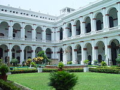
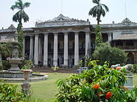
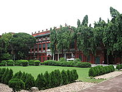
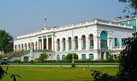

Indian Museum

The Indian Museum is the largest museum in Asia and the oldest in the Asia - Pacific region (est. 1814 at the location of the Asiatic Society).
The Museum shifted to its present sprawling residence in 1875. Situated on Chowringhee Avenue (now J.L. Nehru Road), it houses perhaps the greatest
collection of Indian natural history and an Indian Art collection to rival the Smithsonian Institution and the British Museum. Of specific note are
the meteorite hall and dinosaur hallin the Natural History and Geology section, the numismatics section and the collections of
Gandhara Art, Burmese woodwork, Mughal miniatures and Tibetan banner sections in the Indian Art section. The Anthropological Survey of India headquarters
and the Government College of Art and Craft are housed in the same building. The Geological Survey of India headquarters moved from the
museum to Bidhan Nagar recently. The Indian Museum has a library of excellent historical value, witha special focus on the Raj and Kolkata.
Marble Palace

The Marble Palace is a privately owned collection of eclectic sculptures, paintings and a small menagerie and aviary off Chittaranjan Avenue in North Kolkata.
Built by Raja Rajendra Mullick in 1835, it houses, among other treasures two little-publicized Reubens and a Joshua Reynolds, not to mention over 50 varieties
of marble which grace the interiors of this mansion.
Birla Industrial & Technological Museum
 Birla Industrial & Technological Museum on Gurusaday Dutta Road, was inaugurated in 1959 as the first popular science museum in Asia. Modelled on the Deutsches Museum,
it has interactive popular science exhibits and a significant collection of historical industrial holdings in India. Its collection of old gramophones, sound recorders,
telephones, steam engines, road rollers and other industrial machinery of the period 1880–1950 is very significant. The museum sports a vintage model of the Rolls-Royce
Phantom I make. It also actively organizes summer camps, awareness programs and astronomy observations for school children.
Birla Industrial & Technological Museum on Gurusaday Dutta Road, was inaugurated in 1959 as the first popular science museum in Asia. Modelled on the Deutsches Museum,
it has interactive popular science exhibits and a significant collection of historical industrial holdings in India. Its collection of old gramophones, sound recorders,
telephones, steam engines, road rollers and other industrial machinery of the period 1880–1950 is very significant. The museum sports a vintage model of the Rolls-Royce
Phantom I make. It also actively organizes summer camps, awareness programs and astronomy observations for school children.
Science City
 Science City is a complex near the Eastern Metropolitan Bypass featuring a lot of interactive science and live bioscience exhibits, as well as having Kolkata's first OMNIMAX theatre.
Science City is a complex near the Eastern Metropolitan Bypass featuring a lot of interactive science and live bioscience exhibits, as well as having Kolkata's first OMNIMAX theatre.
Jorasanko Thakur Bari

The Jorasanko Thakur Bari is the ancestral home of the Tagore family and was converted into a museum in 1961. The huge sprawling brick mansions were the cultural hub of Kolkata
for close to a century and was a major force in the women's liberation movement. It hosted the first Brahmo wedding and was an important center in the Independence movement.
The museum has three large galleries - one of the life and works of Rabindranath, a second gallery about his close relatives such as father Debendranath Tagore, Abanindranath
Tagore, Gaganendranath Tagore and others, and a third gallery on the Bengal Renaissance in general.
National Library of India

National Library of India located in Alipore is India's leading library and a public library. It was inaugurated in 1836 by the Governor General Lord Metcalfe by transferring
4675 books from the College of Fort William. Public donations were the main source of books for the library, and by donations of Rupees 300 from proprietors. Dwarakanath Tagore
was the first proprietor of the library. The library was initially only partially public, as poor students could use the library for a limited period of time. The Imperial Library
was founded in 1891 by merging several libraries like those of the East India College and East India Board. Governor General Lord Curzon initiated the merger of these two libraries
into a single Imperial Library in 1903 at the Metcalfe Hall. The goals of the library were to collect every book written about India at any time. The Assistant Librarian of the
British Museum John Macfarlane was the first librarian and was succeeded by the first Indian librarian Harinath De. The library was moved to its present quarters in Belvedere Estate,
Alipore and renamed the National Library. It is a fully public library which co-ordinates the activities of all other Indian public libraries. True to its goal, any book published in
India today has to send one copy to the National library in the spirit of the Library of Congress, United States.